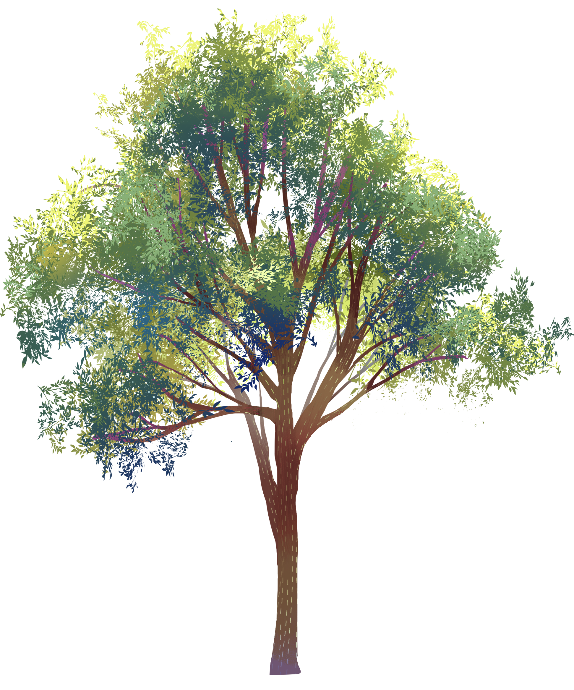
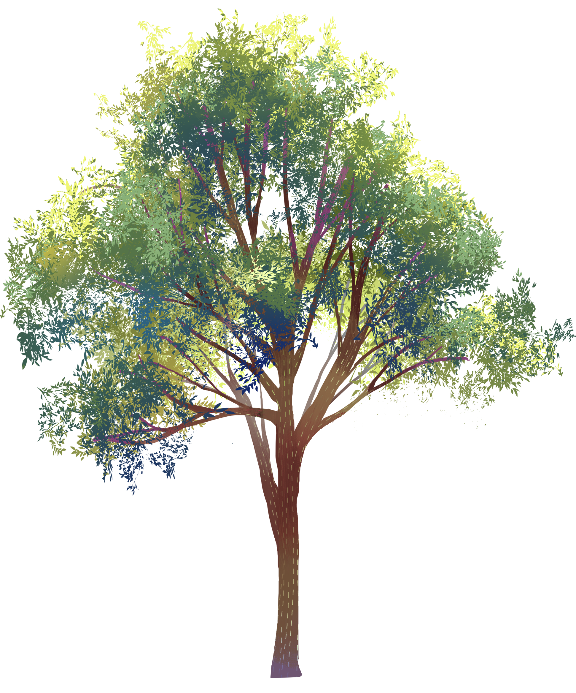

置中顯示的文字

圖/African Wildlife

圖/Byron Serrao / Getty

圖/Wildlife at risk
 



有八個種類的穿山甲分佈在亞非等地，全都處於危險之中。自從2017年1月起，穿山甲的國際貿易被禁止，但走私活動仍在繼續。在東南亞，盜獵者把馬來穿山甲從陸路和海路走私到越南和中國，在這些地方，人們認為它們的肉和鱗片有藥用價值，因而被視為珍饈。
數百萬年以來，穿山甲天生的鎧甲就是它最佳的防禦。它是唯一具有堅硬、板狀鱗片的哺乳動物，看起來像一隻身披鎖子甲的獾。只要存在一丁點的危險，穿山甲就會縮成一團，變成一隻緊密的球。捕食者幾乎不可能弄穿這層硬殼，它甚至可以抵抗獅子、老虎和豹子的牙齒。


亞洲和非洲分佈有八種穿山甲，它們都是夜行動物，並且是出了名的害羞，一天中大部分時間都躲在洞穴和樹洞裏。即使在自然棲息地工作的環保人士通常也很難發現它們。香港大學生物學家蒂莫西·博尼布雷克（Timothy Bonebrake）說："我還沒碰到過任何見過野生穿山甲的人。"
幾十年前，這些動物可能直接在當地市場被售賣。如今，大多數都出口到數千英里外的海外市場。大多數消費者在中國大陸和越南。角質鱗片是傳統藥物的重要成分，而穿山甲的肉通常被當作宴會上的美味。理想的情況是，廚師把活的穿山甲放在餐桌前，在客人面前切開它的喉嚨，以保證肉的新鮮度。而隨著亞洲穿山甲數量的減少，非洲有越來越多的穿山甲被捕獵以滿足需求。

國際自然保護聯盟（International Union for the Conservation of Nature）估計，在過去十年中，一共有100萬隻穿山甲跨越國界，使它成為世界上被走私買賣最多的哺乳動物。這一損失對更廣泛的環境的影響在很大程度上是未知的。"穿山甲的數量正在下降，但這會對生態系統產生影響嗎？我們不知道，但有可能穿山甲真的很重要。"例如，據信每一隻穿山甲每年吃7,000萬隻螞蟻和白蟻。"這對生態系統的循環來說非常重要。"如果沒有這種天然的蟲害控制，這些地區可能很快就會出現過多的昆蟲。
" 穿山甲已經面臨瀕危風險，而大多數人還未聽說過這種動物。"穿山甲的滅絶可能是因為類似的（但在科學上未經證實的）信仰。穿山甲的鱗片由角質素構成，那是與指甲和頭髮相同的東西，這意味著它應該沒有營養價值。但中醫認為它可以治癒一些病症。他們認為其益處部分是穿山甲在野外的行為而產生的。博尼布雷克實驗室的博士生程文達（Cheng Wenda，音譯）說："穿山甲鱗片首要的醫療用途是治療螞蟻叮咬，因為它們吃螞蟻。"而且因為穿山甲會鑽孔，所以有人相信它可以打開你身上的淤塞。"也許正是由於這些原因，一些中醫聲稱穿山甲的鱗片可以提高生育率，甚至可以對抗癌症。
"如果我們這一代人快速行動起來，我們可能還有時間拯救穿山甲。